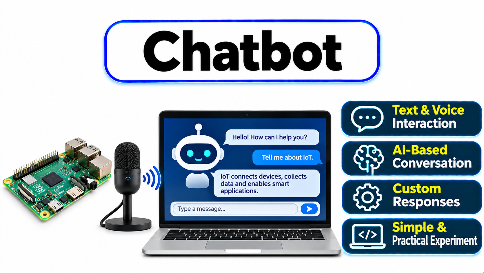

main.py

CHATBOT

To develop an offline voice-response desk robot using Raspberry Pi 4 Model B, USB microphone, push button, Vosk speech recognition, SSD1306 OLED and two SG90 servo motors.
The system recognizes predefined voice commands, generates programmed responses, displays facial expressions on the OLED and performs servo movement during the response.
CHATBOT is an offline voice-response experiment developed using Raspberry Pi and Python.
When the push button is pressed, the Raspberry Pi begins listening for speech through a USB microphone.
Vosk converts the captured speech into text locally, without requiring an internet connection after the required software and speech model are installed.
The recognized command is compared with predefined keywords and phrases stored in the Python program.
When a matching command is found, the corresponding programmed answer is selected.
The robot changes its OLED facial expression while listening, processing and responding.
The servo motors are controlled using GPIOZero to demonstrate robot animation during the response.
The SOP uses
espeak-ng
for offline text-to-speech.
Audible playback requires
a working audio-output device.
This experiment is a predefined offline voice-response system. It is not a generative AI chatbot and does not use ChatGPT, OpenAI or online AI services.
It can only answer commands supported by its programmed response logic.
| Parameter | Configuration |
|---|---|
| Controller | Raspberry Pi 4 Model B |
| Voice Input | USB Microphone |
| Speech Recognition | Vosk, offline |
| Speech Output Command | espeak-ng |
| OLED | SSD1306 I²C 128 × 64 |
| OLED Address | 0x3C |
| OLED SDA | GPIO2 |
| OLED SCL | GPIO3 |
| Push Button | GPIO17 |
| Servo 1 Signal | GPIO18 |
| Servo 2 Signal | GPIO19 |
| Servo Center Position | 90° |
| Speech Sample Rate | 16000 Hz |
| Listening Duration | Up to 6 seconds |
| Programming Language | Python 3 |
| Program Filename | main.py |
| Voice Command | Programmed Response |
|---|---|
| Hello | Hello. How are you? |
| How are you? | I am fine. I am ready to talk with you. |
| What is your name? | My name is Raspberry Pi Buddy. |
| Who are you? | I am your offline voice desk buddy. |
| What is the time? | Current system time |
| What is today's date? | Current system date |
| Thank you | You are welcome. |
| Bye | Goodbye. See you again. |
| How is the weather? | Explains that online weather information is unavailable |
| Unknown Command | Sorry, I did not understand that command. |

Processes offline speech and controls the OLED, push button and servos.

Captures the user's voice commands.

Provides physical robot animation.

Displays simple facial expressions during operation.

Starts the voice listening process.

Connect the GPIO components.
The source SOP also specifies system storage, Raspberry Pi power and audio-output setup. Those are setup requirements, not additional component cards on this page.
| OLED Pin | Raspberry Pi Connection |
|---|---|
| VCC | 3.3V — Physical Pin 1 |
| GND | GND — Physical Pin 6 |
| SDA | GPIO2 — Physical Pin 3 |
| SCL | GPIO3 — Physical Pin 5 |
| Button Terminal | Raspberry Pi Connection |
|---|---|
| One terminal | GPIO17 — Physical Pin 11 |
| Other terminal | GND — Physical Pin 9 |
| Component | Wire | Connection |
|---|---|---|
| Servo 1 | Signal | GPIO18 — Physical Pin 12 |
| Servo 2 | Signal | GPIO19 — Physical Pin 35 |
| Both Servos | Red | Suitable regulated 5V servo supply |
| Both Servos | Brown / Black | Common GND connected to Raspberry Pi GND |
| USB Microphone | USB | Raspberry Pi USB Port |
The push button uses the Raspberry Pi internal pull-up resistor, so an external pull-up is not required.
Power the two servo motors from a suitable regulated supply capable of handling their combined current. Connect servo-supply GND to Raspberry Pi GND.
Never connect the servo power leads to GPIO pins.

GPIO17 detects the push button. When the button is pressed, the program starts recording audio from the USB microphone.
The Vosk model converts the microphone audio into text locally. The model must already be installed on the Raspberry Pi.
The get_response()
function compares
recognized speech
against programmed
keywords and phrases.
The SSD1306 OLED displays a simple face. Different eye expressions indicate listening, thinking, speaking and ready states.
The program sends
the selected response
to espeak-ng.
Actual audio is heard
only if an audio-output
device is configured.
The SOP's code moves Servo 1 from 90° to 0° during speaking and returns it to 90°.
Servo 2 is connected and initialized at 90°, but the original programmed response keeps Servo 2 centered.
sudo apt update sudo apt upgrade -y
sudo apt install -y \ python3-venv \ python3-pip \ espeak-ng \ unzip \ i2c-tools \ alsa-utils \ libportaudio2
mkdir -p ~/Offline_Voice_Chatbot/models cd ~/Offline_Voice_Chatbot
python3 -m venv chatbot_env source chatbot_env/bin/activate
python -m pip install --upgrade pip python -m pip install \ vosk \ sounddevice \ gpiozero \ lgpio \ pillow \ luma.oled
arecord -l
Confirm that the USB microphone is detected and selected as the correct recording device.
sudo raspi-config
Enable I²C under Interface Options. Reboot if required.
i2cdetect -y 1
The SOP expects the OLED
at address 0x3C.
Download an appropriate English Vosk model, extract it and place its model files in:
~/Offline_Voice_Chatbot/models/vosk-model
The folder should contain the actual extracted model files rather than another nested directory.
cd ~/Offline_Voice_Chatbot nano main.py
main.py.source ~/Offline_Voice_Chatbot/chatbot_env/bin/activate python -m py_compile ~/Offline_Voice_Chatbot/main.py
cd ~/Offline_Voice_Chatbot python main.py
No speaker is included
in the approved component
list. The
espeak-ng
command may execute,
but audible speech
depends on an available
audio-output device
and its configuration.
Raspberry Pi Experiment · Code Review
Click any step to highlight the exact corresponding Python code section. Copy Code copies the complete main.py program.
Select a tab to highlight the full relevant code block.
Vosk converts speech into text using an offline model. It does not generate conversational answers.
GPIOZero provides classes for the button and SG90 servo controls.
Pillow creates the image and luma.oled displays it on the SSD1306 screen.
espeak-ng converts predefined answer text to speech. A configured audio device is necessary for audible playback.
Answers: GPIO17; GPIO18 and GPIO19; 0x3C; Vosk; espeak-ng; No, responses are predefined.
Try It: Speak "Hello", "What is your name?" and "What is the time?" after pressing the push button. Compare the recognized commands and programmed replies.
Loading Vosk model... ==================================== OFFLINE RASPBERRY PI VOICE BUDDY ==================================== Press the button and speak.
Speak now... You: hello Buddy: Hello. How are you? Speak now... You: what is your name Buddy: My name is Raspberry Pi Buddy. Speak now... You: what is the time Buddy: The time is 04:30 PM.
The time shown above is only an example. The program uses Raspberry Pi system time.
| Status | OLED Expression |
|---|---|
| READY | Both eyes open |
| LISTENING | Both eyes open |
| THINKING | Left eye closed, right eye open |
| SPEAKING | Left eye open, right eye closed |
| Condition | Servo 1 | Servo 2 |
|---|---|---|
| Ready | 90° | 90° |
| Speaking | 0° | 90° |
| After response | 90° | 90° |
The CHATBOT experiment demonstrates offline speech recognition and predefined response matching using Raspberry Pi, USB microphone and Vosk.
The system displays facial expressions on the OLED and controls servo movement while processing programmed responses.
The program can generate offline speech using espeak-ng when a suitable audio-output device is configured.